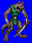
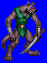
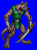
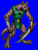

Height: 100-130 cm.Weight: About 150 lbs.
Habitat: Cave, mine Origin: Germany
Meaning: Greek "kobalos" or "fairy child"
In games, kobolds are usually one of the weakest monsters, with the body of a man and the head of a rabid dog. Originally, however, kobolds were blond-haired fairies wearing red silk coats that helped with routine household chores. The change in perception occured with the puritans, who changed its role to that of a minor demon.
See also: Goblin